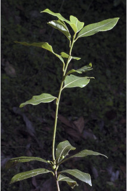
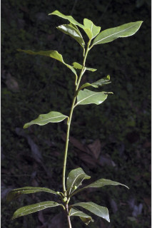
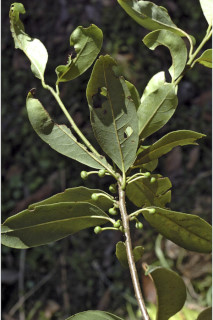
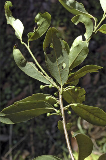

Trees up to 6 m tall.
6 ಮೀ.ವರೆವಿಗೆ ಬೆಳೆಯುವ ಮರಗಳು.
6 മീറ്റര് വരെ ഉയരമുളള മരങ്ങള്.
மரங்கள் 6 மீ. உயரம் வரை வளரக்கூடியது.
Branchlets terete, glabrescent.
ಕಿರುಕೊಂಬೆಗಳು ದುಂಡಾಗಿದ್ದು ಉದುರು ರೋಮಸಹಿತವಾಗಿರುತ್ತವೆ.
ഏതാണ്ട് അരോമിലമായ, ഉരുണ്ട ഉപശാഖകള്.
சிறிய நுனிக்கிளைகள் குறுக்குவெட்டுத் தோற்றத்தில் வளையமானது, சிறு உரோமங்களுடையது.
Leaves simple, alternate, spiral; petiole 1.5 cm long, planoconvex in cross section, glabrous; lamina 7-10 x 2.5-4 cm, obovate to oblanceolate or elliptic, subcoriaceous, glabrous, apex obtuse to acute, base acute to cuneate, margin entire, glabrous, glaucous beneath; secondary_nerves 6-9 pairs; higher order nerves reticulate on both sides at least on dry.
ಎಲೆಗಳು ಸರಳವಾಗಿದ್ದು ಪರ್ಯಾಯ ಮತ್ತು ಸುತ್ತು ಜೋಡನಾ ವ್ಯವಸ್ಥೆಯಲ್ಲಿ ಇರುತ್ತವೆ;ತೊಟ್ಟುಗಳು 1.5 ಸೆಂ.ಮೀ. ಉದ್ದ ಹೊಂದಿದ್ದು ಅಡ್ಡಸೀಳಿದಾಗ ಸಪಾಟ ಪೀನ ಮಧ್ಯದ ಆಕಾರದಲ್ಲಿರುತ್ತವೆ ಮತ್ತು ರೋಮರಹಿತವಾಗಿರುತ್ತವೆ; ಪತ್ರಗಳು 7-10 X 2.5 – 4 ಸೆಂ.ಮೀ.ವರೆಗಿನ ಗಾತ್ರ ಹೊಂದಿದ್ದು ಬುಗುರಿಯಿಂದ ಬುಗುರಿ- ಭರ್ಜಿ ವರೆಗಿನ ಅಥವಾ ಅಂಡವೃತ್ತದ ಆಕಾರ ಹೊಂದಿರುತ್ತವೆ ಮತ್ತು ಉಪತೊಗಲನ್ನೋಲುವ ಮತ್ತು ರೋಮರಹಿತವಾದ ಹಾಗೂ ಪತ್ರದ ತಳಭಾಗದಲ್ಲಿ ಮಾಸಲು ಬೂದು ಹಸಿರು ಬಣ್ಣಹೊಂದಿದ ಮೇಲ್ಮೈ ಹೊಂದಿದ್ದು ಚೂಪಲ್ಲದ ಅಥವಾ ಚೂಪಾದ ತುದಿ ಮತ್ತು ಚೂಪಾದುದರಿಂದ ಬೆಣೆಯಾಕಾರದ ಬುಡವನ್ನು ಹೊಂದಿರುತ್ತವೆ; ಅಂಚು ನಯವಾಗಿ -ರುತ್ತದೆ; ಎರಡನೇ ದರ್ಜೆಯ ನಾಳಗಳು 6-9 ಜೋಡಿಗಳಿರುತ್ತವೆ;ಉನ್ನತ ದರ್ಜೆಯ ನಾಳಗಳು ಪತ್ರಗಳು ಕನಿಷ್ಟ ಪಕ್ಷಒಣಗಿದ್ದಾಗಲಾದರೂ ಜಾಲಬಂಧ ನಾಳ ವಿನ್ಯಾಸ ಹೊಂದಿರುತ್ತವೆ.
ലഘുവായ ഇലകള്, ഏകാന്തരക്രമത്തില്, സര്പ്പിളമായടുക്കിയതാണ്; ഛേദത്തില് ഒരുഭാഗം പരന്നും മറുഭാഗം ഉരുണ്ടുമിരിക്കുന്ന ഘടനയുളള, അരോമിലമായ ഇലഞെട്ടിന് 1.5 സെ.മീ നീളം; പത്രഫലകത്തിന് 7 സെ.മീ തൊട്ട് 10 സെ.മീ വരെ നീളവും 2.5 സെ.മീ മുതല് 4 സെ.മീ വരെ വീതിയും, ആകൃതി അപഅണ്ഡാകാരം തൊട്ട് അപകുന്താകാരം വരെയാകാം, ഉപചര്മ്മില പ്രകൃതം, അരോമിലം, പത്രാഗ്രം നിശിതംതൊട്ട് ആപ്പാകാരം വരെയാകാം, അരികുകള് അവിഭജിതമാണ്, അരോമിലം, കീഴെ നീലരാശി കലര്ന്നതാണ്; 6 മുതല് 9 വരെ ജോഡി ദ്വിതീയ ഞരമ്പുകള്; മറ്റ് ചെറുഞരമ്പുകള്, ഉണങ്ങുമ്പോളെങ്കിലും ഇരുഭാഗത്തും ജാലിതമാണ്.
இலைகள் தனித்தவை, மாற்றுஅடுக்கமானவை, சுழல் போன்று அமைந்தவை; இலைக்காம்பு 1.5 செ.மீ. நீளமானது, குறுக்குவெட்டுத் தோற்றத்தில் பிளேனோகான்வக்ஸ், உரோமங்களற்றது; இலை அலகு 7-10 X 2.5-4 செ.மீ., தலைகீழ் முட்டை முதல் தலைகீழ் ஈட்டி வடிவம் அல்லது நீள்வட்ட வடிவானது, சப்கோரியேசியஸ், கீழ்பரப்பு உரோமங்களற்றது, அலகின் கீழ்பரப்பு மெழுகு பூசியது போன்றது அல்லது சாம்பல் கலந்த நீல நிறமானது (க்களாக்கஸ்), இரண்டாம் நிலை நரம்புகள் 6-9 ஜோடிகள், மற்ற சிறு நரம்புகள் வலைப்பின்னல் போன்றது.
Flowers in axillary or lateral umbels.
ಹೂಗಳು ಅಕ್ಷಾಕಂಕುಳಿನಲ್ಲಿರುವ ಅಥವಾ ಪಾರ್ಶ್ವದಲ್ಲಿನ ಪೀಠಛತ್ರ ಪುಷ್ಪಮಂಜರಿಯಲ್ಲಿರುತ್ತವೆ.
പൂക്കള്, കക്ഷീയമോ പാര്ശ്വസ്ഥമോ ആയ ഛത്രമഞ്ജരിയില് ഉണ്ടാകുന്നു.
மலர்கள் இலைக்கோணங்களில் அல்லது தண்டின் பக்கவாட்டிலுள்ள அம்பல் வகை மஞ்சரி.
Berry, 0.6 cm across, glabrous; seed 1.
ಬೆರ್ರಿ 0.6 ಸೆಂ.ಮೀ. ಅಡ್ಡಗಳತೆ ಹೊಂದಿರುತ್ತದೆ ಮತ್ತು ರೋಮರಹಿತವಾಗಿದ್ದು ಒಂದು ಬೀಜವನ್ನು ಒಳಗೊಂಡಿರುತ್ತದೆ.
ഒറ്റവിത്തുളള കായ, 0.6 സെ.മീ കുറുകേയുളള, അരോമില ബെറിയാണ്.
முழுச்சதைகனி (பெர்ரி), 0.6 செ.மீ. குறுக்களவுடையது; விதை ஒன்றுடையது.


 



 
